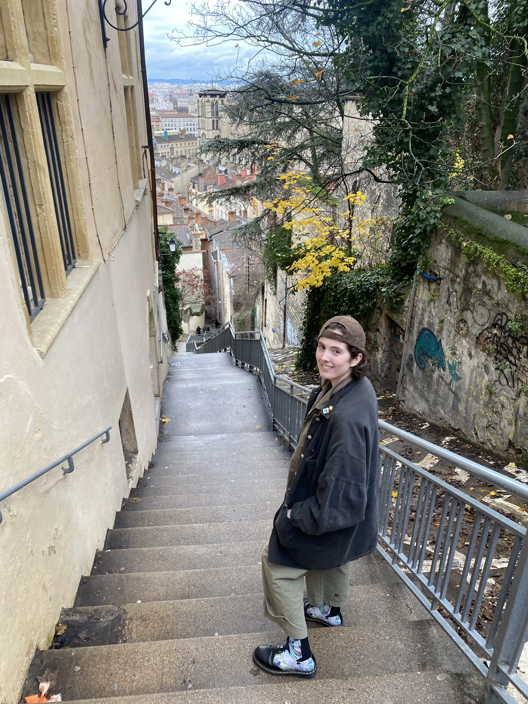

I'm a computational linguistics, data science, and audio enthusiast investigating the intersections of technology,
new media, ethics, and language.
Recently, I graduated from Dartmouth College, where I studied linguistics, computer science,
and computational social science with a focus on data ethics.
While I was a student, I conducted research in computational communications and media studies,
drawing on natural language processing and machine learning techniques
to answer questions about the role of comedy in our media and information ecosystems through the lens of critical data studies.
My work has included fusing science, policy, and the power of play through
award-winning
educational game design with the Wilson Center's
Serious Games Initiative,
as well as helping some Pretty Good Friends
make funny things for nice people as a trusty production assistant.
I love a good story, a fun game, and a strongly-used verb.
In my free time, you can find me haunting local cafes and libraries,
writing screenplays, and talking to the void
(likely in a local radio station or podcasting studio).
